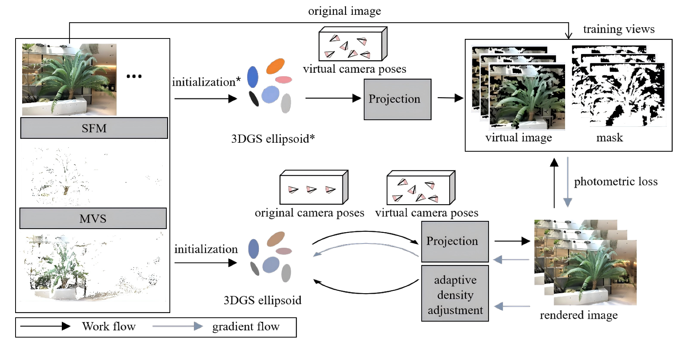
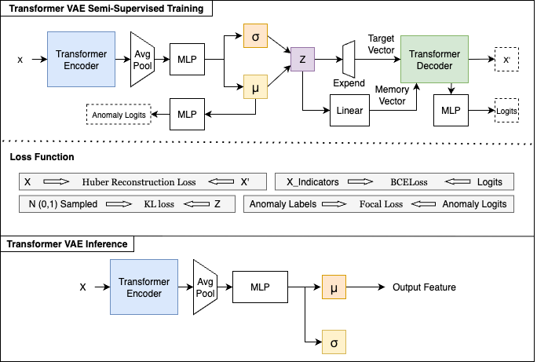
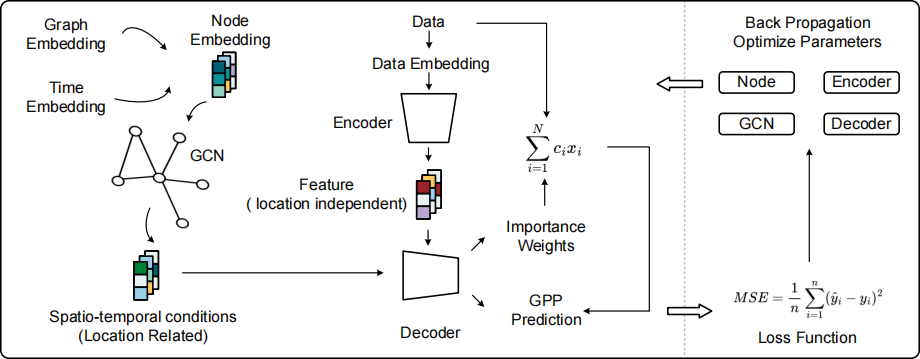
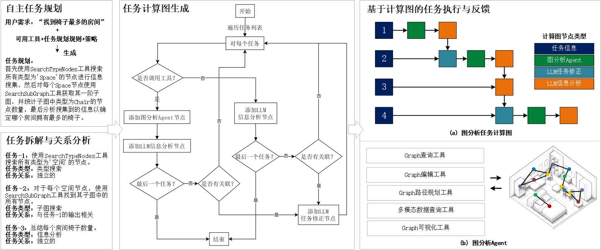
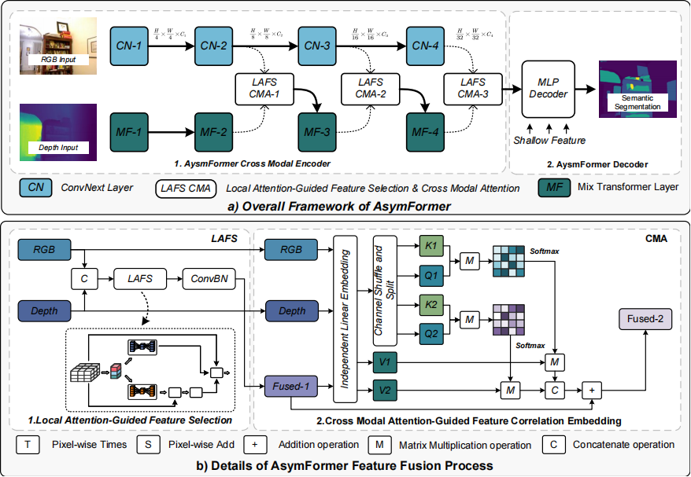
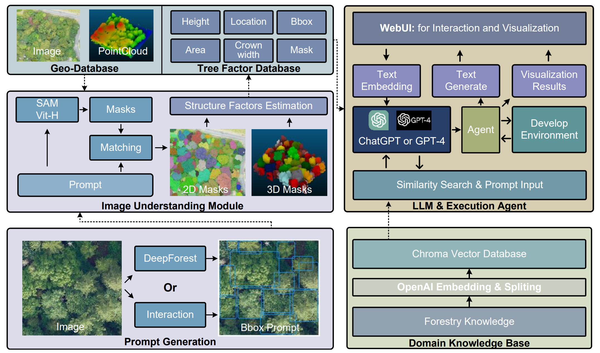
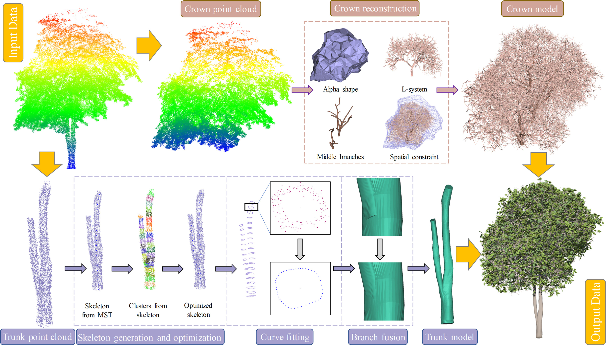
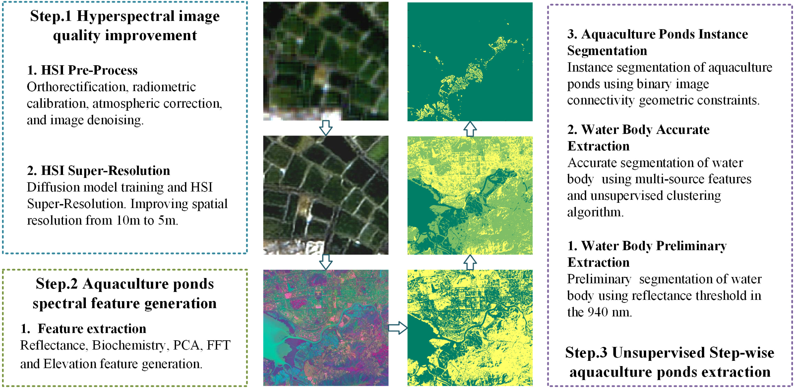
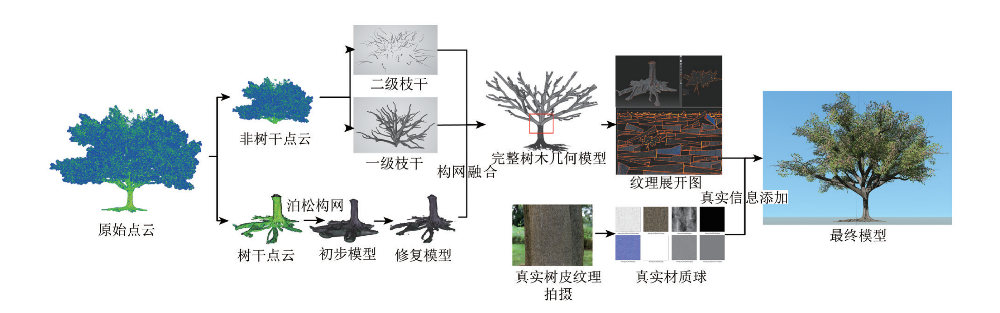
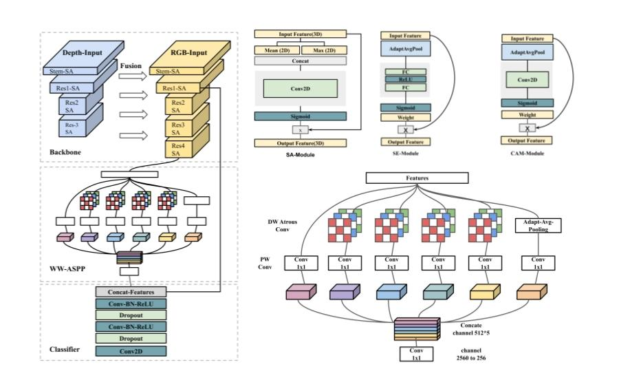

Publications

ISPRS-Archives
VISTA-GS: MVS-Guided Virtual View Augmentation for Sparse-View 3D Gaussian Splatting
The International Archives of the Photogrammetry, Remote Sensing and Spatial Information Sciences, XLIX-B2-2026, 421–427, 2026
3D Gaussian Splatting (3DGS) has emerged as a leading technique for novel view synthesis (NVS), yet its performance degrades drastically under sparse-view conditions. While existing methods have sought to address this by incorporating accurate 3D geometry via Multi-View Stereo (MVS) or LiDAR priors, the view-dependent appearance parameters (i.e., spherical harmonics) remain exclusively optimized on the limited training views, leading to severe appearance overfitting. We propose VISTA-GS (Virtual Image Synthesis and Training Augmentation), a framework that synergizes MVS-based dense initialization with a physically-grounded virtual view augmentation strategy. Specifically, we position virtual cameras at strategic offsets around the original viewpoints and render virtual training images with binary validity masks via alpha-blending. By computing photometric losses exclusively within valid mask regions, VISTA-GS injects explicit angular constraints into the optimization process, effectively regularizing view-dependent appearance without relying on any external generative model. Experiments on the LLFF benchmark and a real-world LiDAR-scanned dataset demonstrate that our method achieves state-of-the-art NVS quality under sparse-view settings, with particularly significant improvements on challenging out-of-distribution viewpoints.

JLPPI
Process Safety Risk Assessment Against Natural Disasters: A Cross-System Scenario Analysis Perspective
Journal of Loss Prevention in the Process Industries, 100, 105905, 2025

arXiv 2025
An Interpretable Implicit-Based Approach for Modeling Local Spatial Effects: A Case Study of Global Gross Primary Productivity
arXiv:2502.06170, 2025
In Earth sciences, unobserved factors exhibit non-stationary spatial distributions, causing the relationships between features and targets to display spatial heterogeneity. Conventional statistical learning methods often struggle to capture spatial heterogeneity, while approaches like Geographically Weighted Regression fall short of uncovering global patterns. We propose a dual-branch encoder-decoder neural network: a GCN-LSTM encoder aggregates node information in a spatiotemporal conditional graph, encoding location-specific heterogeneity as an implicit conditional vector, while a self-attention encoder extracts location-invariant common features; a conditional decoder then predicts response variables and interpretable weights. Validated on global GPP prediction (2001–2020), the model achieves an RMSE of 0.836, outperforming LightGBM (1.063) and TabNet (0.944), and reveals how the dominant factors of GPP vary across times and locations.

AGCS
3D Scene Graph Representation and Application for Indoor Space
Acta Geodaetica et Cartographica Sinica, 53(7), 1355, 2024
现有室内三维场景表达聚焦于对象化的描述方法，欠缺对室内场景复杂关系信息的显式表达。本文基于三维场景图基础理论，提出面向室内空间智能的三维场景图表达模型，系统性介绍了室内三维场景图要素层级化组织、几何表达、语义描述、关系描述方法，建立了可统一描述室内要素几何、语义及关系的概念模型。基于公开 IFC 模型构建了具有多层级关系信息的三维场景图，并结合大语言模型，通过复杂场景检索、拓扑分析等应用验证了模型的能力：室内三维场景图具备复杂计算和分析能力，可直接与大语言模型集成，通过简单的自然语言提示实现复杂的场景分析应用。

CVPRW 2024
AsymFormer: Asymmetrical Cross-Modal Representation Learning for Mobile-Platform Real-Time RGB-D Semantic Segmentation
Proceedings of the IEEE/CVF Conference on Computer Vision and Pattern Recognition (CVPR) Workshops, pp. 7608–7615, 2024
Understanding indoor scenes is crucial for urban studies. Considering the dynamic nature of indoor environments, effective semantic segmentation requires both real-time operation and high accuracy. We propose AsymFormer, a novel network that improves real-time semantic segmentation accuracy using RGB-D multi-modal information without substantially increasing network complexity. AsymFormer uses an asymmetrical backbone for multimodal feature extraction, reducing redundant parameters by optimizing computational resource distribution. A Local Attention-Guided Feature Selection (LAFS) module selectively fuses features from different modalities, and a Cross-Modal Attention-Guided Feature Correlation Embedding (CMA) module further extracts cross-modal representations. AsymFormer achieves 54.1% mIoU on NYUv2 and 49.1% mIoU on SUNRGBD, with an inference speed of 65 FPS (79 FPS with mixed-precision quantization) on RTX3090.

ISPRS-Archives
Tree-GPT: Modular Large Language Model Expert System for Forest Remote Sensing Image Understanding and Interactive Analysis
The International Archives of the Photogrammetry, Remote Sensing and Spatial Information Sciences, XLVIII-1/W2-2023, 1729–1736, 2023
This paper introduces Tree-GPT, a modular LLM expert system that integrates image understanding modules, domain knowledge bases, and toolchains into the forestry remote sensing data workflow. The image understanding module extracts structured information from forest remote sensing images by automatically or interactively generating prompts to guide the Segment Anything Model (SAM) in producing optimal tree segmentation results; tree structural parameters are then computed and stored in a database. Upon receiving a natural language instruction, the LLM generates code via chain-of-thought, which is executed by an LLM agent in a local environment; for ecological parameter calculation, the system retrieves corresponding knowledge from the knowledge base to guide accurate code generation. Tested on search, visualization, and machine learning analysis tasks, the prototype demonstrates the potential for dynamic usage of LLMs in forestry research and environmental sciences.

JAG
Branching the Limits: Robust 3D Tree Reconstruction from Incomplete Laser Point Clouds
International Journal of Applied Earth Observation and Geoinformation, 125, 103557 (JCR: Q1; IF: 7.5), 2023
Accurate individual tree reconstruction from laser point clouds is vital for precise biomass estimation and virtual geographic environment modeling. However, mobile laser scanning systems often capture tree point clouds obscured by leaves, resulting in missing branch data. We propose a fine-grained 3D tree reconstruction method for incomplete point clouds: a 3D morphological algorithm separates the main trunk and branches; branch point clouds are node-aggregated via clustering and the trunk skeleton is computed with multi-scale curve fitting; the Alpha shape constrains an L-system growth model to automatically generate missing branch structures; finally, a morphologically constrained multi-level trunk fusion produces the complete tree model. Experiments on five trees with varying structural complexity show the method surpasses SOTA 3D tree modeling algorithms in reconstruction accuracy, with pronounced noise resilience and robustness.

JAG
Unsupervised Stepwise Extraction of Offshore Aquaculture Ponds Using Super-Resolution Hyperspectral Images
International Journal of Applied Earth Observation and Geoinformation, 119, 103326 (JCR: Q1; IF: 7.5), 2023
Accurate monitoring of offshore aquaculture areas is vital given their ecological impact on coastal regions. Existing extraction methods are limited by the lack of high-resolution hyperspectral imagery and inadequate feature extraction. We propose an unsupervised extraction method based on hyperspectral super-resolution, feature fusion, and a stepwise extraction strategy: a deep learning-based super-resolution method first enhances the original hyperspectral imagery; multi-dimensional features (elevation, reflectance, biochemistry, PCA, and FFT) are then fused to improve sensitivity to aquaculture ponds; the ponds are finally extracted via a stepwise strategy. Experiments on ZH-1 and GF-7 imageries achieve an OA of 97.9%, and the method generalizes to object extraction on multispectral datasets. Ablation studies confirm all three modules effectively improve extraction accuracy.


ISPRS-Annals
PSCNet: Efficient RGB-D Semantic Segmentation Parallel Network Based on Spatial and Channel Attention
ISPRS Annals of the Photogrammetry, Remote Sensing and Spatial Information Sciences, V-1-2022, 129–136, 2022
RGB-D semantic segmentation is a key technology for indoor semantic map construction, but traditional networks suffer from redundant parameters and modules. Based on the DeepLabv3+ framework, PSCNet improves the original model in three ways: spatial-channel co-attention for attention module selection, removing the last module from the depth backbone for backbone simplification, and redesigning WW-ASPP with depthwise convolution. Compared to DeepLabv3+, PSCNet has approximately the same number of parameters but a 5% improvement in mIoU, and achieves 47 FPS inference on RTX3090—much faster than state-of-the-art semantic segmentation networks.